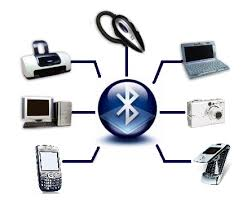
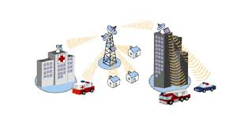

Conectividad sin cables en la escuela
Las tecnologias inalambricas permiten la transmision de datos sin necesidad de cables fisicos.En las escuelas son fundamentales para facilitar el acceso a internet desde computadoras,notebooks,celulares y otros dispositivos. Gracias a tecnologias como Wifi y Bluetooth estudiantes y docentes pueden acceder a plataformas educativas,compartir archivos,investigar en linea y usar aplicaciones para aprender en cualquier lugar escolar.
Estas tecnologias funcionan mediante ondas de radio,lo que permite una conexion rapida,segura y sin necesidad de estar conectando con cables.Esto es clave en la educacion moderna,ya que mejora el acceso a la informacion y fomenta el trabajo colaborativo dentro del aula.
Tipos de redes inalambricas:
-

- WLAN: Redes de área local como WIFI,muy común en escuelas para conectarse a internet
- WPAN: Redes personales como Bluetooth,usadas por ejemplo para conectar un teclado inalambrico. 
- WWAN: Redes de área amplia como 4G

Evolucion de las tecnologias inalambricas
Las tecnologias inalambricas han evolucionado de manera significativa en las ultimas decadas:
- 1G (años 80):Primeras redes moviles analogicas,enfocadas solo en llamadas de voz.
- 2G (años 90):Transmision digital de voz y mensajes SMS
- 3G (2000):Internet movil basico con navegacion y correo electronico.
- 4G (2010):Alta velocidad para streaming,videollamadas y aplicaciones en tiempo real.
- 5G (actualidad):Velocidad ultra rapidas,baja latencia y soporte para dispositivoss del internet de las cosas (loT)
En paralelo,tecnologias como WIFI pasaron de 802.11b WIFI 6,mejorando la velocidad,la cobertura y la capacidad de conectar multiples dispositivos de forma estable.